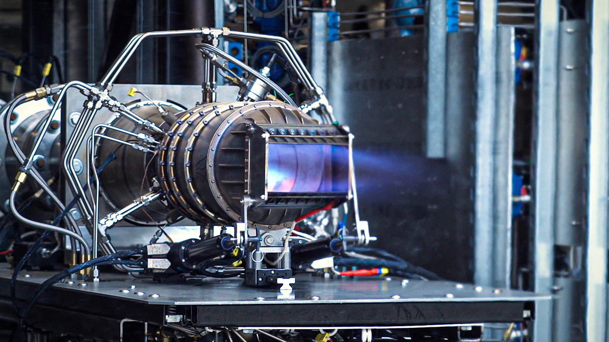
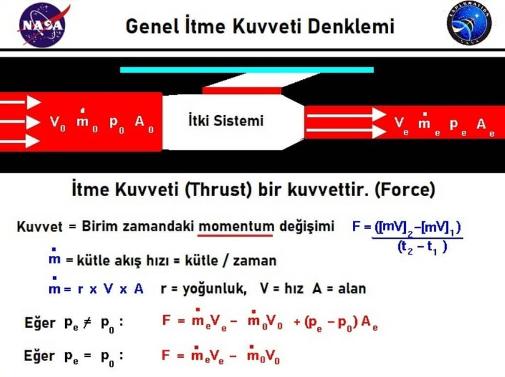

GENEL İTME KUVVETİ DENKLEMİ

İtme kuvveti (thrust), roketi havada veya uzayda hareket ettiren bir kuvvettir ve roketin itki sistemleri tarafından üretilir.
İtme kuvveti -Newton'un üçüncü hareket yasasında da açıklandığı üzere- hızlanan bir gaz kütlesinin oluşturduğu tepki yoluyla üretilen mekanik bir kuvvettir. Bir gaz veya "çalışma sıvısı" yer çekimine doğru hızlandırılır ve roket ters yönde hareket eder. Bu gazı hızlandırmak için bizim bir tür itki sistemine ihtiyacımız vardır.
"İtki sistemleri hakkında çeşitli bilgilere daha sonra değineceğiz. Şimdilik itki sistemini bir gazı hızlandıran makine gibi düşünelim."
Newton'un ikinci hareket yasasına göre, biz kuvveti bir zamandaki momentum değişimi şeklinde tanımlayabiliriz.(Momentum cismin kütlesi ile hızının çarpımı ile bulunur.)
O zaman kuvvet denklemi;
F = ((m*V)2 - (m*V)1) / (t2-t1) şeklinde olacaktır.
Eğer kütleyi sabit tutar ve hızı zamanla değiştirirsek bildiğimiz basit kuvvet denklemini elde ederiz. Kuvvet, cismin kütlesi ile ivmesinin çarpımıdır. F = m.a
Bir katı ile uğraşıyorsak kütleyi takip etmek nispeten kolaydır. Bir katının molekülleri birbirine sıkı sıkıya bağlıdır ve katı şeklini korur. Ancak bir akışkan (sıvı veya gaz) ile uğraşıyorsak ve özellikle hareketli bir akışkan ile uğraşıyorsak kütleyi takip etmek zorlaşır. Bu tür durumlarda önemli olan kütle değil kütle akış hızıdır.
Kütle Akış Hızı Nedir?
Kütle akış hızı, birim zamanda belirli bir düzlemde hareket eden kütle miktarıdır. Birimi kütle/zaman'dır. Simgesi (m üssü nokta) olmasına rağmen bazen μ de kullanılır. Kütle akış hızının farklı adlandırmaları da yapılır. Örneğin akışkanlar mekaniğinde kütle akısı veya kütle akımı olarak adlandırılır.
Kütle akış hızı matematiksel olarak bir fonksiyonun limiti ile ifade edilir.
Kütle akış hızı farklı şekillerde hesaplanabilir;
Burada
ρ = akışkanın kütle yoğunluğu
v = akan kütlenin akış hızı
A = kesit alanı/yüzeyi
Q = debi
jm = kütle akısı
değerleridir.
Yukarıdaki denklem kesit alanı düz zeminler için geçerlidir. Kesit alanı eğimli alanlar için denklem, yüzey integrali ile ifade edilir.
Yani sadece sıvının kütlesi demek değildir. Kütle akış hızıdır, birim zamandaki kütledir. Örneğin Newton'un ikinci yasasını şu şekilde yazabiliriz;
F = .V veya F = d(mV)/dt
Kütle akış hızı zaten zamana bağlılığı (kütle/zaman) içerdiğinden itki sistemi boyunca momentumdaki değişikliği, kütle akış hızı ile akışkan hızının çarpımının değişimi şeklinde de bulabiliriz. Burada akışkanın itki cihazından çıkışına "e" serbest olduğu duruma da "0" diyeceğiz.
O zaman kuvvet formulü, F = (.V)e - (.V)0
olacaktır.
Birim kontrolü denklemin sağ tarafında şunları gösterir:
F = ( kütle / zaman ) x ( uzunluk / zaman ) = ( kütle x uzunluk ) / zaman²
Bu bir kuvvetin boyutudur.
Birim (Unit) ve Boyut (Dimension) kelimeleri kesinlikle birbirine karıştırılmaması gereken birer kavramı ifade ederler. Bununla ilgili ayrıntılı bilgiye sonrasında değineceğiz.

Çıkış basıncı, serbest hava basıncından farklı ise hesaba katmamız gereken ek bir etki daha vardır.
Akışkan basıncı -gazlar üzerinden konuşursak- gaz moleküllerinin momentumu ile ilişkilidir ve uyguladığımız herhangi bir alana dik etki eder. Eğer akışta net bir basınç değişikliği varsa, momentumda da ek bir değişiklik vardır.
Çıkış basıncı pe, serbest basınç p0 ve akışkanın çıktığı itki sisteminin çıkış alanı Ae olmak üzere genel itme kuvveti şu şekilde olacaktır.
F = (.V)e - (.V)0 + (pe - p0) * Ae
İtme kuvveti denklemine çok dikkatli baktığımızda, yüksek itme kuvveti üretmenin iki yolu olduğunu görüyoruz.
İlk yol motordan geçen hava miktarını arttırarak kütle akış hızını () arttırmak olacaktır. Yani kısaca, birim zamanda motordan geçen hava kütlesini arttırmaktır. Pervaneli uçakların ve yüksek bypass oranına sahip turbofan motorların arkasındaki tasarım teorisi budur. Her saniye yüksek miktarda hava işlenir ancak hız çok fazla değişmez.
Gaz türbinli motorlar için kullanılabilecek genel itme kuvveti denkleminin basitleştirilmiş bir versiyonu vardır. Bir türbün motorunun nozülü genellikle motordan çıkan havanın basıncını serbest havanın basıncına eşit yapmak için tasarlanmıştır. Bu durumda genel formüldeki basınç-alan terimi sıfıra eşit olur.
İtme kuvveti;
F = (.V) - (.V).0
formulü ile bulunur.
Genel itme kuvveti denkleminin roket motorları için kullanılabilecek basitleştirilmiş farklı bir versiyonu da vardır. Bir roket kendi içerisinde oksitleyicisini taşıdığından -diğer bir deyişle, çalışma sıvısı kendisini çevreleyen hava olmadığından- serbest durumdaki kütle akış hızı 0 olur ve genel denklem;
F = (.V)e + (pe - p0) * Ae
şeklini alır.
Roketlerin analizinde, kütle akış hızına olan bağımlılığı ortadan kaldıran, spesifik itme (Isp) adında faydalı bir roket performans parametresi vardır.
Isp = Veq / g0
Bu denklemde Veq; (.V)e ve (pe-p0) * Ae terimlerine eşit olan eşdeğer hızdır. g0 ise yerçekimi ivmesidir.
Hem roketler hem de turbojetler için nozül önemli rol oynar. Nozülün tasarımıi belirli basınç ve sıcaklık değerlerinde akışkanın çıkış hızını belirler. Aynı zamanda nozülün tasarımı kütle akış hızını da ayarlar. Bu nedenle nozül tasarımı, bu sayfada formüllerle anlarıldığı gibi itki sistemlerinin itme kuvvetini belirleyen en önemli faktördür.
Kaynakça:

 Ana Sayfa
Ana Sayfa
 Hakkımızda
Hakkımızda
 Projelerimiz
Projelerimiz
 Etkinliklerimiz
Etkinliklerimiz
 Eğitim
Eğitim
 Blog
Blog
 Gönüllü Ol
Gönüllü Ol
 @turkroket
@turkroket
 Destekle
Destekle